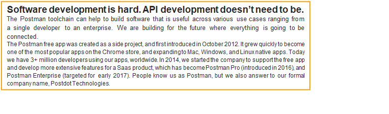
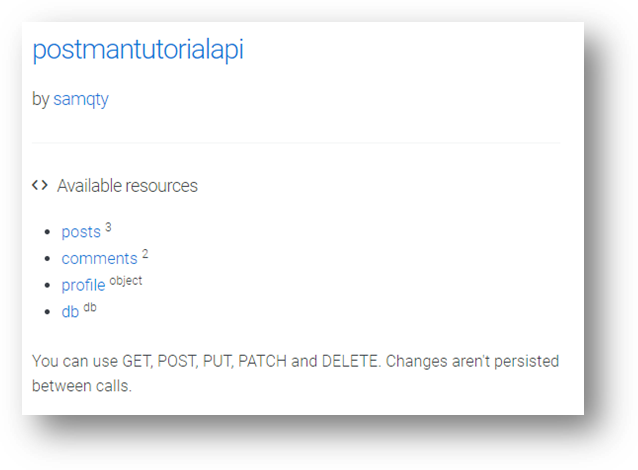

Postman is a pretty robust tool that helps you build high quality web APIs. Below is an extract from their site
This tutorial covers how you, as developer, can leverage post man to create test suits that can quickly test expectations on a web api end point. This tutorial assumes you have a beginner level understanding of what a web api is and know a little bit about integration testing (or unit testing), and little exposure to javascript
A web API is some type of application program interface that can be access via HTTP protocol. It is worth mentioning that, it is a concept not a technology, since we can build web APIs using different technologies such as Java, .net, nodejs etc. Many organizations use them internally to communicate between their applications, and to expose some data or functionality to the public.
For this tutorial we will be using a mock web API I set up on https://my-json-server.typicode.com/samqty/postmantutorialapi
